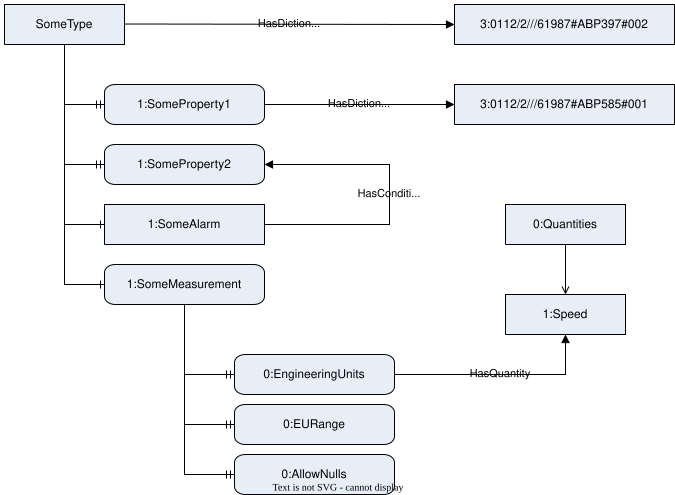

1 Scope📝
This document specifies [WHAT THIS COMPANION SPECIFICATION COVERS].
OPC Foundation
OPC is the interoperability standard for the secure and reliable exchange of data and information in the industrial automation space and in other industries. It is platform independent and ensures the seamless flow of information among devices from multiple vendors. The OPC Foundation is responsible for the development and maintenance of this standard.
OPC UA is a platform independent service-oriented architecture that integrates all the functionality of the individual OPC Classic specifications into one extensible framework. This multi-layered approach accomplishes the original design specification goals of:
- Platform independence: from an embedded microcontroller to cloud-based infrastructure
- Secure: encryption, authentication, authorisation, and auditing
- Extensible: ability to add new features including transports without affecting existing applications
- Comprehensive information modelling capabilities: for defining any model from simple to complex
Other Organization
[INFORMATION ABOUT OTHER ORGANIZATION CONTRIBUTING TO THE SPECIFICATION]
2 Normative references📝
The following documents are referred to in the text in such a way that some or all of their content constitutes requirements of this document. For dated references, only the edition cited applies. For undated references, the latest edition of the referenced document (including any amendments and errata) applies.
- OPC Unified Architecture - Part 1: Overview and Concepts http://www.opcfoundation.org/documents/10000-1/
- OPC Unified Architecture - Part 2: Security Model http://www.opcfoundation.org/documents/10000-2/
- OPC Unified Architecture - Part 3: Address Space Model http://www.opcfoundation.org/documents/10000-3/
- OPC Unified Architecture - Part 4: Services http://www.opcfoundation.org/documents/10000-4/
- OPC Unified Architecture - Part 5: Information Model http://www.opcfoundation.org/documents/10000-5/
- OPC Unified Architecture - Part 6: Mappings http://www.opcfoundation.org/documents/10000-6/
- OPC Unified Architecture - Part 7: Profiles http://www.opcfoundation.org/documents/10000-7/
- OPC Unified Architecture - Part 8: Data Access http://www.opcfoundation.org/documents/10000-8/
- OPC Unified Architecture - Part 19: Dictionary Reference http://www.opcfoundation.org/documents/10000-19/
- OPC Unified Architecture - Part 100: Devices http://www.opcfoundation.org/documents/10000-100/
- Internet X.509 Public Key Infrastructure Certificate and Certificate Revocation List (CRL) Profile https://datatracker.ietf.org/doc/html/rfc5280
3 Terms, definitions and abbreviations📝
3.1 Overview📝
It is assumed that basic concepts of OPC UA information modelling are understood in this document. This document will use these concepts to describe the OPC UA for Sample Applications Information Model. For the purposes of this document, the terms and definitions given in OPC 10000-1, OPC 10000-2, OPC 10000-3, OPC 10000-4, OPC 10000-5, OPC 10000-6, OPC 10000-7, OPC 10000-8, OPC 10000-19, OPC 10000-100 and IETF RFC 5280 as well as the following apply.
NOTE
Note that OPC UA terms and terms defined in this document are italicized in the document.
3.2 Terms and definitions📝
3.2.1 FirstSampleTerm
[what it means in this document, as a noun phrase and without a leading article]
Note 1 to entry:
[Information or example to help explain the term].
Note 2 to entry:
[More information or examples].
[SOURCE: IETF RFC 5280]
3.2.2 SecondSampleTerm
[what it means in this document, as a noun phrase and without a leading article]
3.3 Abbreviations📝
| HMI | Human Machine Interface |
| MES | Manufacturing Execution System |
| PLC | Programmable Logic Controller |
| UML | Unified Modelling Language |
| URI | Uniform Resource Identifier |
| XML | Extensible Markup Language |
4 Editing Guidelines📝
4.1 Overview📝
Working groups have to choose between using Word as their primary tool or GitHub. The decision is made by the working group for each specification that they are responsible for. Some working groups may continue to use Word as their primary tool for older specifications but adopt GitHub as the basis for new work.
The Word approach is more suitable for Working Groups with less technical SMEs (Subject Matter Experts) as members because it is single tool integrated into Teams which is the primary collaboration platform.
The GitHub approach is more suited to Working Groups with programmers who are already familar with Git and GitHub and are confortable use command line tools as part of the editing process. The GitHub approach also makes it easier to leverage LLMs during the specification development process.
4.2 Word Documents📝
All Working Groups are required to provide a Word document version of their specification that complies with the IEC requirements. The tools provided by the OPC Foundation will generate this document automatically from a GitHub repo that follows the OPC Foundation document template.
The auto-generated Word documents can also be distributed to reviewers, however, editors will have manually integrate feedback into the GitHub source files (possibily with LLM assistance).
4.3 Figures📝
All figures must be developed with a tool that allows the IEC to edit the diagrams. Providing static images exported from bespoke tools is not acceptable.
Figures may be created as Visio or Powerpoint files. When using a Word document as the master, these files are embedded in the Word document as OLE objects. When using GitHub as the master, the OPC Foundation provides a tool that converts the Visio or Powerpoint files to SVG files.
When using GitHub as the master, the recommended format is drawio because there are many good open source editors for this format. Files with the extension 'drawio.svg' can edited using drawio tools but are saved as SVG. Editors that produce formats other than drawio should not be used even if they support SVG export.
In rare cases, figures will be pictures of real equipment or copies of figures from other sources that cannot be edited. These figures can be image files (PNG, JPG).
4.4 Headings📝
This guideline is applied for all OPC UA parts following the IEC guidelines:
- The first letter is capitalized.
- For headers that consist of multiple words, all other words are all lower case with the exception of proper nouns, like terms or type names.
This applies to section, table, and figure headers.
4.5 References📝
Forward HasSubtype References are not added to Type definitions.
5 General information📝
[Explain the domain to a reader who knows OPC UA but not this industry.]
6 Use cases📝
6.1 [First use case]📝
[What a user wants to be able to do, and what the model has to carry for them to do it.]
6.2 [Second use case]📝
[What a user wants to be able to do, and what the model has to carry for them to do it.]
7 Information Model overview📝
[An overview of the model elements and how they relate to each other.]

8 OPC UA ObjectTypes📝
8.1 SomeType📝
[What this type represents, and when a Server would expose one. One or two paragraphs.]
The SomeType ObjectType is defined in Table 1.
| Attribute | Value | ||||
|---|---|---|---|---|---|
| BrowseName | 1:SomeType | ||||
| IsAbstract | False | ||||
| References | Node Class | BrowseName | DataType | TypeDefinition | Other |
|---|---|---|---|---|---|
| Subtype of the 0:BaseObjectType defined in OPC 10000-5 | |||||
| 0:HasComponent | Object | 1:SomeAlarm | 0:AlarmConditionType | O | |
| 0:HasComponent | Object | 1:SomeState | 1:SomeStateMachineType | M | |
| 0:HasProperty | Variable | 1:SomeProperty1 | 0:String | 0:PropertyType | M |
| 0:HasProperty | Variable | 1:SomeProperty2 | 0:Int32 | 0:PropertyType | M |
| 0:HasComponent | Variable | 1:SomeMeasurement | 0:Number | 1:SomeVariableType | O |
| 0:HasComponent | Variable | 1:SomeNumericArray | 0:Int32[] | 0:BaseDataVariableType | O |
| 0:HasComponent | Variable | 1:SomeStructureArray | 1:SomeStructure[] | 0:BaseDataVariableType | O |
| 0:HasComponent | Variable | 1:SomeEnumeration | 1:SomeEnumeration | 0:BaseDataVariableType | O |
| 0:HasComponent | Method | 1:SomeMethod | M | ||
| Conformance Units | |||||
|---|---|---|---|---|---|
| Some Base | |||||
| Some Measurements | |||||
| Some Arrays |
| Editor Note - DESCRIBING NODES |
|---|
| Each of child node defined in the table should have text describing what it for and what semantics apply. In some cases, the nodes are defined completely in other sections so only a brief summary is needed here. |
The SomeProperty1 Property [describe its purpose].
The SomeProperty2 Property [describe its purpose].
The SomeMeasurement Variable [describe its purpose].
The SomeNumericArray Variable [describe its purpose].
The SomeStructureArray Variable [describe its purpose].
The SomeMethod Method [describe its purpose].
The SomeAlarm Alarm [describe its purpose].
| Editor Note - SPECIFYING CONFORMANCE UNITS |
|---|
| The ConformanceUnits listed in the table are the primary ConformanceUnits used to test the capabilities provided by a Node. ConformanceUnits which indirectly require the Node are not listed. For example, a ConformanceUnit testing a subtype of a ObjectType does not need to be listed since a supertype is automatically included if a subtype is included. If there are no suitable ConformanceUnits then the Node may not be needed or there are missing ConformanceUnits. The OPC Foundation tooling used to validate the specification during the release process automatically adds the ConformanceUnits listed to the Category element for the Node definition in the UANodeSet. Therefore, editors do not have to add these Category elements manually into the UANodeSet. |
The components of the SomeType ObjectType have additional references which are defined in Table 2.
| SourceBrowsePath | Reference Type | Is Forward | TargetBrowsePath | ||||
|---|---|---|---|---|---|---|---|
| 1:SomeProperty1 | 0:HasDictionaryEntry | True | 3:0112/2///61987#ABN613#001 | ||||
| 0:HasQuantity | True |
| ||||
| 1:SomeMeasurement | 0:HasCondition | True | 1:SomeAlarm |
| Editor Note - SPECIFYING ADDITIONAL REFERENCES |
|---|
| Table 1 allows you to define ObjectTypes. You add InstanceDeclarations, which can be based on complex TypeDefinitions (such as AnalogItemType). The complex structure of those TypeDefinitions does not need to be further defined, as it is already done by their TypeDefinitions. However, if you want to add additional References, you can use a table format as shown in Table 2. This format allows you to add References from those InstanceDeclarations to any other Node. |
| Editor Note - SPECIFYING DICTIONARY REFERENCES |
|---|
When making use of dictionary references (see OPC 10000-19) the following rules apply:
When using IRDIs or URIs:
|
The components of the SomeType ObjectType have additional subcomponents which are defined in Table 3.
| BrowsePath | Reference | NodeClass | BrowseName | DataType | TypeDefinition | Others | |||
|---|---|---|---|---|---|---|---|---|---|
| 1:SomeAlarm | 0:HasComponent | Object | 1:SomeParameters | 0:BaseObjectType | M | ||||
| 1:SomeMeasurement | 0:HasProperty | Variable | 0:AllowNulls | 0:Boolean | 0:PropertyType | O | |||
| 0:HasComponent | Variable | 1:MaxNumberOfPorts | 0:Byte | 0:BaseDataVariableType | M | |||
| 0:HasComponent | Variable | 1:LocationTag | 0:String | 0:BaseDataVariableType | M | |||
| 0:HasProperty | Variable | 0:MaxStringLength | 0:UInt32 | 0:PropertyType | Os |
| Editor Note - SPECIFYING ADDITIONAL SUBCOMPONENTS |
|---|
| Table 1 allows you to define ObjectTypes. You add InstanceDeclarations, which can be based on complex TypeDefinitions (such as AnalogItemType). The complex structure of those TypeDefinitions does not need to be further defined, as it is already done by their TypeDefinitions. However, if you want to add additional subcomponents, you can use a table format as shown in Table 3. This format allows you to add instances to those InstanceDeclarations. |
The child Nodes of the SomeType ObjectType have additional Attribute values defined in Table 4.
| BrowsePath | Value Attribute | Description Attribute | |||
|---|---|---|---|---|---|
| 1:SomeMeasurement | 5.7 | This is a description for SomeMeasurement. | |||
| "Building 2" | This is a description for LocationTag. | |||
| High: 1000 Low: 0 | This is the EURange for SomeMeasurement. | |||
| NamespaceUri: urn:someunits.org:2026-08:definitions UnitId: 1234 DisplayName: Fidgets Description: Number of Fidgets | ||||
| 1:SomeAlarm | This is a description for SomeAlarm. | ||||
| 1:SomeNumericArray | 0 1 2 | ||||
| 1:SomeStructureArray | | ||||
8.2 SomeMethod📝
[An overview of the Method]
Signature
SomeMethod (
[in] 0:String InArg1,
[in] 0:Double InArg2,
[out] 0:UInt32 OutArg1,
[out] 0:Int32 SomeStatus);| Argument | Description |
|---|---|
| InArg1 | Some description of InArg1. |
| InArg2 | Some description of InArg2. |
| OutArg1 | Some description of OutArg2. |
| SomeStatus | Some description of SomeStatus. |
[Additional discussion of the arguments and how they are used.]
Method Result Codes (defined in Call Service)
| Result Code | Description |
|---|---|
| Bad_UserAccessDenied | See OPC 10000-4 for a general description. |
The SomeMethod Method is defined in Table 6.
| Attribute | Value | ||||
|---|---|---|---|---|---|
| BrowseName | 1:SomeMethod | ||||
| IsAbstract | False | ||||
| References | Node Class | BrowseName | DataType | TypeDefinition | Other |
|---|---|---|---|---|---|
| 0:HasProperty | Variable | 0:InputArguments | 0:Argument[] | 0:PropertyType | M |
| 0:HasProperty | Variable | 0:OutputArguments | 0:Argument[] | 0:PropertyType | M |
8.3 SomeInstance📝
[What this instance represents and how it is used]
Its representation in the AddressSpace is defined in Table 7.
| Attribute | Value | ||||
|---|---|---|---|---|---|
| BrowseName | 1:SomeInstance | ||||
| IsAbstract | False | ||||
| References | Node Class | BrowseName | DataType | TypeDefinition | Other |
|---|---|---|---|---|---|
| 0:OrganizedBy the 0:Objects object defined in OPC 10000-5 | |||||
| 0:HasTypeDefinition | ObjectType | 1:SomeType | |||
8.4 SomeStateMachineType📝
| Editor Note - STATEMACHINE |
|---|
| This section gives an example of how a StateMachine is defined using the table formats used in the temple. This allows the validator to check the correctness of the StateMachine in the Spec with the NodeSet-File. |
[What this type represents, and when a Server would define one. One or two paragraphs.]
The SomeStateMachineType ObjectType is defined in Table 8.
| Attribute | Value | ||||
|---|---|---|---|---|---|
| BrowseName | 1:SomeStateMachineType | ||||
| IsAbstract | False | ||||
| References | Node Class | BrowseName | DataType | TypeDefinition | Other |
|---|---|---|---|---|---|
| Subtype of the 0:FiniteStateMachineType defined in OPC 10000-5 | |||||
| 0:HasComponent | Object | 1:Idle | 0:InitialStateType | ||
| 0:HasComponent | Object | 1:Working | 0:StateType | ||
| 0:HasComponent | Object | 1:FromIdleToWorking | 0:TransitionType | ||
| 0:HasComponent | Object | 1:FromWorkingToIdle | 0:TransitionType | ||
| 0:HasComponent | Method | 1:Start | M | ||
| 0:HasComponent | Method | 1:Stop | M | ||
| Conformance Units | |||||
|---|---|---|---|---|---|
| Some Base |
The components of the SomeStateMachineType ObjectType have additional references which are defined in Table 9.
| SourceBrowsePath | Reference Type | Is Forward | TargetBrowsePath |
|---|---|---|---|
| 1:FromIdleToWorking | 0:FromState | True | 1:Idle |
| 0:ToState | True | 1:Working | |
| 0:HasCause | True | 1:Start | |
| 1:FromWorkingToIdle | 0:FromState | True | 1:Working |
| 0:ToState | True | 1:Idle | |
| 0:HasCause | True | 1:Stop | |
| 0:HasEffect | True | 0:SystemEventType |
The component Variables of the SomeStateMachineType have additional Attributes defined in Table 10.
| BrowsePath | Value Attribute | ||
|---|---|---|---|
| 1 | ||
| 2 | ||
| 1 | ||
| 2 |
8.5 Start📝
[An overview of the Method]
Signature
Start ();| Argument | Description |
|---|
[Additional discussion of the arguments and how they are used.]
Method Result Codes (defined in Call Service)
| Result Code | Description |
|---|---|
| Bad_UserAccessDenied | See OPC 10000-4 for a general description. |
The Start Method is defined in Table 12.
| Attribute | Value | ||||
|---|---|---|---|---|---|
| BrowseName | 1:Start | ||||
| IsAbstract | False | ||||
| References | Node Class | BrowseName | DataType | TypeDefinition | Other |
|---|
8.6 Stop📝
[An overview of the Method]
Signature
Stop ();| Argument | Description |
|---|
[Additional discussion of the arguments and how they are used.]
Method Result Codes (defined in Call Service)
| Result Code | Description |
|---|---|
| Bad_UserAccessDenied | See OPC 10000-4 for a general description. |
The Stop Method is defined in Table 14.
| Attribute | Value | ||||
|---|---|---|---|---|---|
| BrowseName | 1:Start | ||||
| IsAbstract | False | ||||
| References | Node Class | BrowseName | DataType | TypeDefinition | Other |
|---|
8.7 SomeEventType📝
[What this type represents, and when a Server would define one. One or two paragraphs.]
The SomeEventType EventType is defined in Table 15.
| Attribute | Value | ||||
|---|---|---|---|---|---|
| BrowseName | 1:SomeEventType | ||||
| IsAbstract | False | ||||
| References | Node Class | BrowseName | DataType | TypeDefinition | Other |
|---|---|---|---|---|---|
| Subtype of the 0:SystemEventType defined in OPC 10000-5 | |||||
| 0:HasProperty | Variable | 1:SomeEventField | 0:String | 0:PropertyType | M |
| Conformance Units | |||||
|---|---|---|---|---|---|
| Some Base |
This EventType inherits all Properties of the SystemEventType.
[Addition descriptions of additional properties.]
9 OPC UA VariableTypes📝
9.1 SomeVariableType📝
[What this type represents, and when a Server would define one. One or two paragraphs.]
The SomeVariableType VariableType is defined in Table 16.
| Attribute | Value | ||||
|---|---|---|---|---|---|
| BrowseName | 1:SomeVariableType | ||||
| IsAbstract | False | ||||
| References | Node Class | BrowseName | DataType | TypeDefinition | Other |
|---|---|---|---|---|---|
| Subtype of the 0:AnalogItemType defined in OPC 10000-5 | |||||
| 0:HasProperty | Variable | 1:SomeVar1 | 0:UtcTime | 0:PropertyType | M |
| 0:HasProperty | Variable | 1:SomeVar2 | 0:UtcTime | 0:PropertyType | M |
| Conformance Units | |||||
|---|---|---|---|---|---|
| Some Measurements |
[Addition descriptions of additional properties.]
10 OPC UA DataTypes📝
10.1 SomeStructure📝
[What this DataType represents and how it is used]
The SomeStructure DataType is defined in Table 17.
| Name | Type | Description | AllowSubtypes |
|---|---|---|---|
| SomeStructure | 0:Structure | Subtype of the 0:Structure defined in OPC 10000-5 | |
| SP1 | 0:Double | Setpoint 1 | |
| SP2 | 0:Double | Setpoint 2 | |
| SomeVector | 0:Vector | Yes | |
Its representation in the AddressSpace is defined in Table 18.
| Attribute | Value | ||||
|---|---|---|---|---|---|
| BrowseName | 1:SomeStructure | ||||
| IsAbstract | False | ||||
| References | Node Class | BrowseName | DataType | TypeDefinition | Other |
|---|---|---|---|---|---|
| Subtype of the 0:Structure defined in OPC 10000-5 | |||||
| Conformance Units | |||||
|---|---|---|---|---|---|
| Some Measurements | |||||
| Some Arrays |
10.2 SomeUnion📝
[What this DataType represents and how it is used]
The SomeUnion DataType is defined in Table 19.
| Name | Type | Description |
|---|---|---|
| SomeUnion | 0:Union | Subtype of the 0:Union defined in OPC 10000-5 |
| Choice1 | 0:String | First choice. |
| Choice2 | 1:SomeStructure | Second choice. |
| Choice3 | 1:SomeEnumeration | Third choice. |
Its representation in the AddressSpace is defined in Table 20.
| Attribute | Value | ||||
|---|---|---|---|---|---|
| BrowseName | 1:SomeUnion | ||||
| IsAbstract | False | ||||
| References | Node Class | BrowseName | DataType | TypeDefinition | Other |
|---|---|---|---|---|---|
| Subtype of the 0:Union defined in OPC 10000-5 | |||||
| Conformance Units | |||||
|---|---|---|---|---|---|
| Some Measurements |
10.3 SomeEnumeration📝
[What this DataType represents and how it is used]
The SomeEnumeration DataType is defined in Table 21.
| Name | Value | Description |
|---|---|---|
| ValueName1 | 0 | Description for ValueName1. |
| ValueName2 | 1 | Description for ValueName2. |
| ValueName3 | 2 | Description for ValueName3. |
Its representation in the AddressSpace is defined in Table 22.
| Attribute | Value | ||||
|---|---|---|---|---|---|
| BrowseName | 1:SomeEnumeration | ||||
| IsAbstract | False | ||||
| References | Node Class | BrowseName | DataType | TypeDefinition | Other |
|---|---|---|---|---|---|
| Subtype of the 0:Enumeration defined in OPC 10000-5 | |||||
| Conformance Units | |||||
|---|---|---|---|---|---|
| Some Measurements |
10.4 SomeOptionSet📝
[What this DataType represents and how it is used]
The SomeOptionSet DataType is defined in Table 23.
| Name | Bit | Description |
|---|---|---|
| SomeOption1 | 0 | This flag is SomeOption1. |
| SomeOption2 | 1 | This flag is SomeOption2. |
| SomeOption3 | 2 | This flag is SomeOption3. |
Its representation in the AddressSpace is defined in Table 24.
| Attribute | Value | ||||
|---|---|---|---|---|---|
| BrowseName | 1:SomeOptionSet | ||||
| IsAbstract | False | ||||
| References | Node Class | BrowseName | DataType | TypeDefinition | Other |
|---|---|---|---|---|---|
| Subtype of the 0:UInt32 defined in OPC 10000-5 | |||||
| Conformance Units | |||||
|---|---|---|---|---|---|
| Some Measurements |
11 OPC UA ReferenceTypes📝
11.1 HasSomeRelation📝
[What this ReferenceType represents and how it is used]
Its representation in the AddressSpace is defined in Table 25.
| Attribute | Value | ||||
|---|---|---|---|---|---|
| BrowseName | 1:HasSomeRelation | ||||
| IsAbstract | False | ||||
| References | Node Class | BrowseName | DataType | TypeDefinition | Other |
|---|---|---|---|---|---|
| Subtype of the 0:NonHierarchicalReferences defined in OPC 10000-5 | |||||
| Conformance Units | |||||
|---|---|---|---|---|---|
| Some Base |
12 Profiles and Conformance Units📝
12.1 Conformance Units📝
Table 26 defines the Conformance Units for the OPC UA Information Model for Sample Applications.
| Category | Title | Description |
|---|---|---|
| Server | Some Base | [A description of the conformance unit] |
| Server | Some Measurements | [A description of the conformance unit] |
| Server | Some Arrays | [A description of the conformance unit] |
12.2 Profiles📝
12.2.1 Profile list📝
Table 27 lists all Profiles defined in this document and defines their URIs.
| Profile | URI |
|---|---|
| Sample Base Server Facet | http://opcfoundation.org/UA-Profile/Sample/Server/SampleBaseServerFacet |
12.2.2 Server Facets📝
12.2.2.1 Overview
The following subclauses specify the Server Facets available for applications that implement the Sample Applications companion specification. Each subclause defines and describes a Facet or Profile.
12.2.2.2 Sample Base Server Facet📝
This Facet defines support for base Sample server functionality.
| Group | Conformance Unit / Profile Title | Mandatory / Optional |
|---|---|---|
| Sample | Some Base | M |
| Sample | Some Measurements | O |
| Sample | Some Arrays | O |
13 Namespaces📝
13.1 Namespace Metadata
Table 29 defines the namespace metadata for this document. The Object is used to provide version information for the namespace and an indication about static Nodes. Static Nodes are identical for all Attributes in all Servers, including the Value Attribute.
The information is provided as Object of type NamespaceMetadataType. This Object is a component of the Namespaces Object that is part of the Server Object. The NamespaceMetadataType ObjectType and its Properties are defined in OPC 10000-5.
The version information is also provided as part of the ModelTableEntry in the UANodeSet XML file. The UANodeSet XML schema is defined in OPC 10000-6.
| Attribute | Value |
|---|---|
| BrowseName | urn:opcua:opcfoundation.org.com:2026-08:sample |
| Property | DataType | Value |
|---|---|---|
| NamespaceUri | String | urn:opcua:opcfoundation.org.com:2026-08:sample |
| NamespaceVersion | String | 1.0.1-alpha |
| NamespacePublicationDate | DateTime | 2026-08-23 |
| IsNamespaceSubset | Boolean | False |
| StaticNodeIdTypes | IdType [] | 0 |
| StaticNumericNodeIdRange | NumericRange [] | |
| StaticStringNodeIdPattern | String |
The IsNamespaceSubset Property is set to False as the UANodeSet XML file contains the complete Namespace. Servers only exposing a subset of the Namespace shall set this Property to True.
13.2 Handling of OPC UA Namespaces
Namespaces are used by OPC UA to create unique identifiers across different naming authorities. The Attributes NodeId and BrowseName are identifiers. A namespace is identified with a string, typically a URI, and is represented in the NodeId and BrowseName by an index into the Server's namespace table.
Table 30 provides a list of mandatory and optional namespaces used in an Sample Applications Server.
| NamespaceURI | Description |
|---|---|
| http://opcfoundation.org/UA/ | Namespace for NodeIds and BrowseNames defined in the OPC UA specification. This namespace shall have namespace index 0. |
| urn:opcua:opcfoundation.org.com:2026-08:sample | Namespace for NodeIds and BrowseNames defined in this model. |
| http://opcfoundation.org/UA/DI/ | Namespace for NodeIds and BrowseNames defined in OPC 10000-100. |
| http://opcfoundation.org/UA/Dictionary/IRDI | Namespace for NodeIds and BrowseNames defined in this IRDI dictionary model. Note that IRDI model is never available as a single NodeSet. The NodeIds are IRDIs which identify the target even if an IRDI NodeSet with the NodeId is not available. |
Table 31 provides a list of namespaces and their indices used for BrowseNames in this document. A BrowseName written without a prefix is from the default namespace of this document.
| NamespaceURI | Namespace Index | Example |
|---|---|---|
| http://opcfoundation.org/UA/ | 0 | 0:EngineeringUnits |
| urn:opcua:opcfoundation.org.com:2026-08:sample | 1 | |
| http://opcfoundation.org/UA/DI/ | 2 | 2:DeviceRevision |
| http://opcfoundation.org/UA/Dictionary/IRDI | 3 |
Annex A Namespaces and Mappings📝
(normative)
A.1 NodeSets and Supplementary Files
The OPC UA for Sample Applications Information Model is identified by the following URI:
urn:opcua:opcfoundation.org.com:2026-08:sample
Documentation for the NamespaceUri can be found here.
The NodeSet associated with this version of specification can be found here:
The NodeSet associated with the latest version of the specification can be found here:
https://reference.opcfoundation.org/nodesets/?u=urn:opcua:opcfoundation.org.com:2026-08:sample&i=1
Supplementary files for the OPC UA for Sample Applications Information Model can be found here:
The files associated with the latest version of the specification can be found here:
https://reference.opcfoundation.org/nodesets/?u=urn:opcua:opcfoundation.org.com:2026-08:sample&i=2